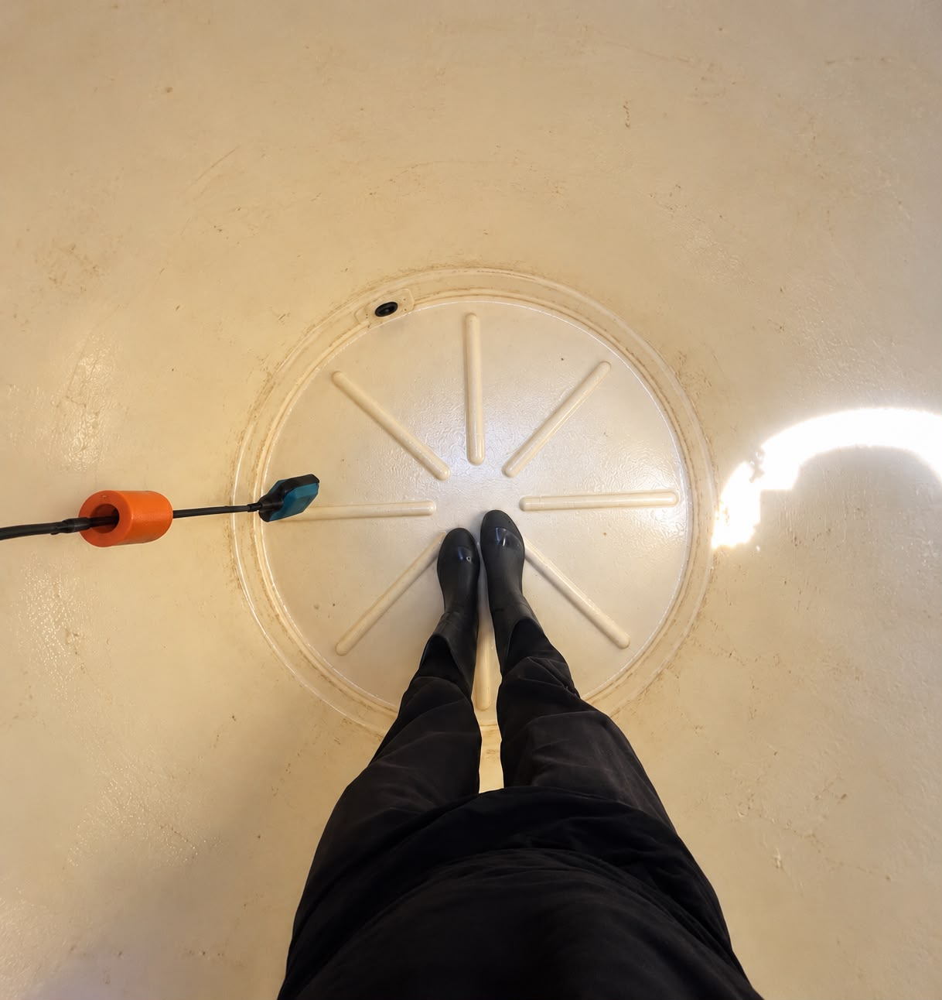
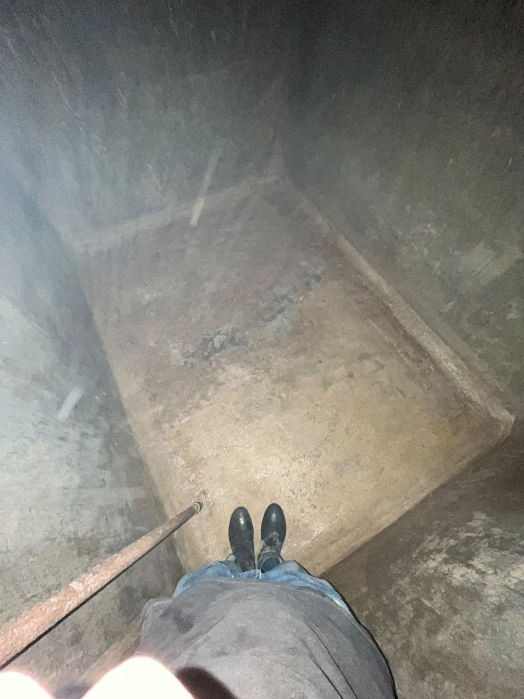
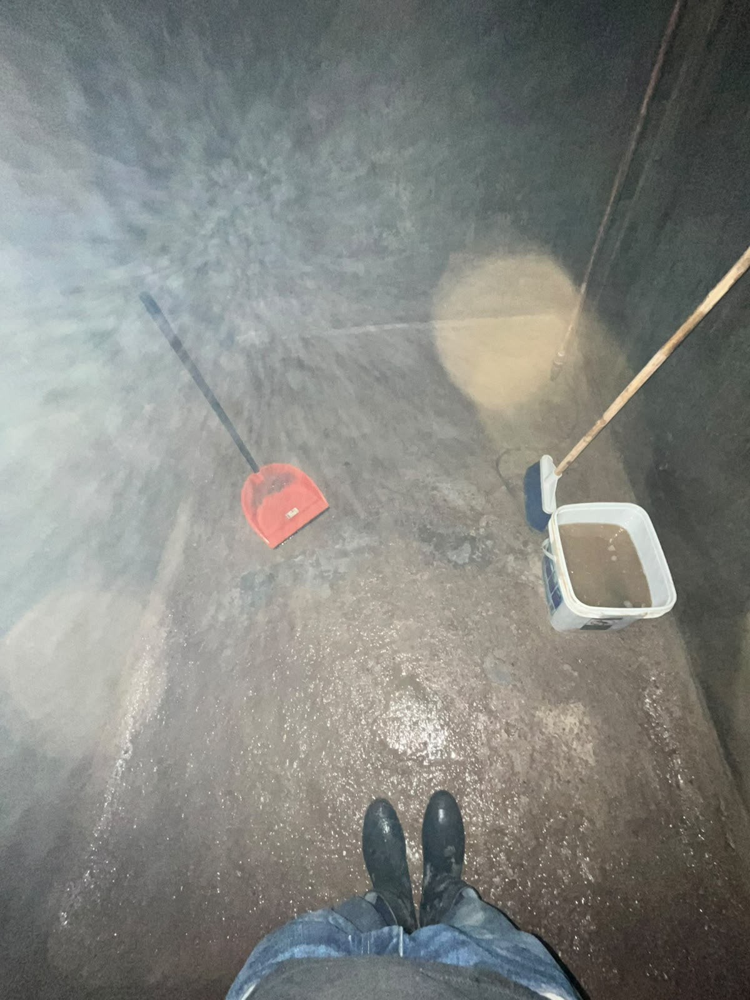
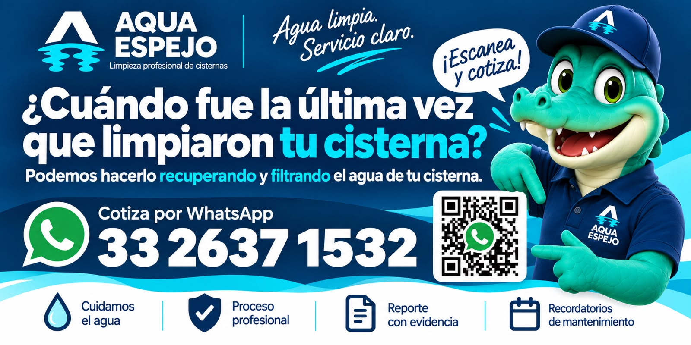

CISTERNA / ALJIBE
$3,200 MXN
Limpieza de tu cisterna o aljibe.
Consultar servicio ↗CISTERNAS Y TINACOS · GUADALAJARA
El cuidado del agua empieza en tu cisterna. Dale el mantenimiento que necesita con un servicio profesional y claro, de principio a fin.
Cuéntanos tu ubicación y la capacidad aproximada.
Agua limpia.
Servicio claro.
MANTENIMIENTO CON SENTIDO
Atendemos la limpieza de cisternas, aljibes y tinacos en Guadalajara. Revisamos las condiciones de tu instalación para definir el alcance del servicio antes de agendar.
¿Tu cisterna todavía tiene agua? Consulta la opción de recuperación y filtrado. Su viabilidad depende del estado del agua y de tu instalación.
Cuéntanos la capacidad aproximada, el acceso y las condiciones de tu cisterna para preparar tu cotización.
Una alternativa para cuidar el agua existente, sujeta a valoración. Pregunta si aplica en tu caso.
Reporte con evidencia del trabajo y recordatorios para ayudarte a organizar el siguiente mantenimiento.
SERVICIO CLARO, DESDE EL PRECIO
Precios en pesos mexicanos.
CISTERNA / ALJIBE
$3,200 MXN
Limpieza de tu cisterna o aljibe.
Consultar servicio ↗TINACO
$1,000 MXN
Limpieza de tu tinaco.
Consultar servicio ↗PAQUETE · AMBOS
$4,000 MXN
Cisterna o aljibe + tinaco.
Ahorras $200 frente a contratarlos por separado.
Antes de agendar, confirmamos contigo cobertura, capacidad, acceso y alcance del servicio.
SIN COMPLICACIONES
Envíanos tu colonia, capacidad aproximada y fotos del acceso, si las tienes.
Confirmamos cobertura, alcance, precio y disponibilidad antes de agendar.
Realizamos el servicio acordado según las condiciones de tu instalación.
Recibes evidencia del servicio y puedes solicitar un recordatorio de mantenimiento.
DESDE EL INTERIOR
Fotografías de nuestro trabajo en campo.



CONOCE AQUAESPEJO
¿Cuándo fue la última vez que limpiaron tu cisterna? Si no lo recuerdas, empecemos por revisar qué necesita.
Cuéntanos sobre tu cisterna ↗
ANTES DE AGENDAR
Si tu duda no está aquí, escríbenos.
Cisterna o aljibe: $3,200 MXN. Tinaco: $1,000 MXN. Paquete de ambos: $4,000 MXN. Comparte tu ubicación, capacidad y condiciones de acceso para confirmar el alcance antes de agendar.
El servicio se ofrece en Guadalajara. Envíanos tu colonia o código postal para confirmar cobertura y disponibilidad antes de agendar.
Ofrecemos la opción de recuperación y filtrado sujeta a valoración. Su viabilidad depende de las condiciones del agua y de la instalación; no se puede confirmar sin revisar tu caso.
Al agendar, confirmaremos contigo las condiciones de acceso y las indicaciones específicas para tu cisterna. No la vacíes sin antes consultar con el equipo.
No. La limpieza de la cisterna y el filtrado no equivalen a una certificación de potabilidad. Si necesitas evaluar la calidad del agua, consulta por una valoración especializada.
HABLEMOS DE TU CISTERNA
Sin complicaciones. Habla directamente con nosotros por WhatsApp.
33 2637 1532 ↗Guadalajara, Jalisco · Cobertura por confirmar según ubicación.
Escríbenos para confirmar tu servicio, resolver tus dudas y consultar disponibilidad.
Cotizar por WhatsAppAl escribirnos, puedes compartir tu colonia y si necesitas limpieza de cisterna, tinaco o ambos.